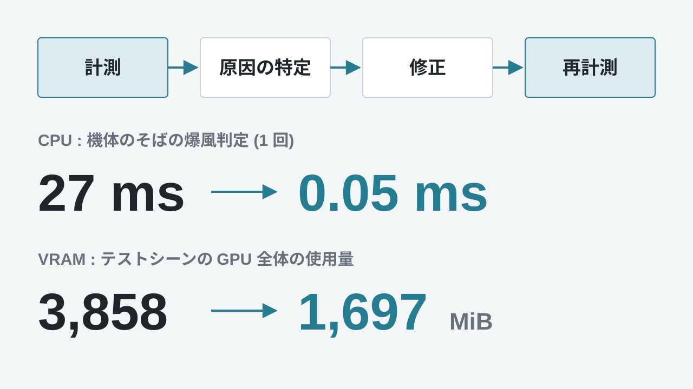

自作エンジン / 技術詳細
全体の設計
約18万行のエンジンを、Core・Engine・Application・Editor の4層に分けて依存を一方向に保っています。1フレームの流れ、自作エディター、規約、計測にもとづく改善までをまとめました。
01
概要
設計の考え方
最初は1つのプロジェクトで、ゲームとエンジンのコードが互いに参照し合っていました。依存図を作ると循環が多く、1か所直すと広く再ビルドになり、エンジンだけ取り出すこともできませんでした。そこで層を分け、依存の向きをビルドで確かめるようにしました。
| 項目 | 値 |
|---|---|
| C++ | 約18万行 / 1,318 ファイル |
| HLSL | 約1.1万行 / 101 ファイル |
| 開発期間 | 2025年11月〜2026年11月 / 約 966 コミット |
02
動作動画
エディターで作っている様子
03
層と依存
4層の構成

- 層ごとに静的ライブラリ : Core(数学・GUID・ログなど)、Engine(描画・ECS・ジョブ・リソース・物理など)、Application(ゲーム)、Editor に分けました。
- ビルドで止める : 上の層を
#includeすると、ビルド時の検査で止まります。 - 窓口を通す : エンジンがエディターの機能を使うときは
EditorFieldを通します。 - シングルトンは1つ : 残したのは
MainEngineだけです。ほかは持ち主がunique_ptrで持ち、EngineServicesで使う側へ配ります。
どこからでも呼べると、誰がいつ初期化・破棄するかが分からなくなり、終了時に落ちる不具合が実際に出ました。MainEngine は「アプリで1つ、最初に作って最後に消す」と説明できるので残しています。
04
1フレームの流れ
何がどの順に動くか
- BeginFrame時間・入力・アセットの更新
- ゲームの更新シーンごとの ECS をフェーズ順に
- BeginDraw3フレーム前の GPU 完了を待つ
- 描画要求を積むソートとアップロード
- レンダーグラフカメラごとに実行
- EndDraw提出・Present
ゲームの更新
- フレームの最初に、予約された生成・削除・付け外しをまとめて反映します。
- Input → PreUpdate → Update → 物理の1ステップ → Physics → Animation → Camera → PostUpdate の順にフェーズを回します。
- 各フェーズの中では、システムを依存順に並べ、ぶつからないものをワーカーで並列に走らせます。フェーズの終わりで全部を待ちます。
描画
- ゲーム側は描画要求を積むだけで、エンジンがソートと GPU へのアップロードを行います。
- スキニングや BLAS の更新のようにカメラに依存しない処理は1回だけ行い、カメラごとにレンダーグラフを実行します。
05
自作エディター
ゲームを作るための道具
- ImGui(docking)製で、階層・インスペクター・ギズモ・アセットブラウザを持ちます。同じ exe の中で、エディター・ゲーム・エディターを出したままのプレイを切り替えます。
- コンポーネントに型情報を書くと、保存と編集の UI が自動で付きます。
- ノードエディターの土台を共通化し、レンダーパイプラインとアニメーターで使っています。
- エフェクトエディター、プレハブエディター、プロファイラー(全体・GPU・ECS・スレッド・パーティクル・VRAM)を備えています。
- 値を変えながらその場で確かめられるので、武器やミサイルの避けやすさ、音量の調整の回数を増やせました。
06
コーディング規約
読みやすさを保つ決まり
規模が 18 万行を超え、自分でも前に書いたコードの決まりを忘れるようになったので、規約を約 870 行の文書にまとめました。
| 項目 | 決まり |
|---|---|
| 命名 | 引数 a_、ローカル _、メンバ m_、static s_ |
| 所有 | unique_ptr が基本。shared_ptr は理由があるときだけ |
| 依存 | Editor / Application → Engine → Core の一方向 |
| そのほか | include、コメント、クラスの並び、ECS、レンダーグラフの書き方。C スタイルキャストは禁止 |
直し方
- 依存図を Python で Excalidraw 形式に自動生成し、循環を見つけて、計画書を書いてから段階的に直しました(計画書は 10 本以上)。
- 規約の監査を行い、適合状況と未修正の項目を記録しています。
- main は常に動く版にし、作業はブランチで行って、Release で確かめてからマージしています。
開発の一部で Claude Code を使っています。方針と設計の判断は自分で行い、入れるコードは読んで理解してから入れました。使い方は VECTOR REIGN のページに記載しています。
07
計測と改善
数字で原因を特定する

- HitchMonitor : 60FPS を割ったフレームだけ、メインスレッドの段・ECS のシステムの時間・出来事(PSO 生成、同期読み込み、剛体の追加など)を書き出します。
- HangWatchdog : フレームが 5 秒進まないと、全スレッドの呼び出し履歴などを書き出します。
爆風の判定 27 ms → 0.05 ms
- 原因 : 爆風の球の判定が、機体の判定メッシュ(約 4 万枚)の三角形を全部集めていました(2.6 万件)。
- 直し方 : 広い範囲の判定でボディを集め、ボディごとに「1つでも当たれば打ち切る」形に変えました。
残っている既知のもの
- シーン開始直後の PSO の一斉生成(ボリュメトリックフォグで 45 ms)
- BGM の同期読み込み(15〜34 ms)
08
成果
数字で見る
| 項目 | 値 |
|---|---|
| 爆風の判定(1回) | 27 ms → 0.05 ms |
| 敵の初出現の停止 | 26〜30 ms → ロード中に先に作って解消 |
| テストシーンの GPU メモリ | 3,858 MiB → 1,697 MiB |
| シングルトン | MainEngine の1つだけ |
| 上向きの include | ビルド時の検査で止める |
動作確認環境 : Intel Core i7-14650HX(論理24スレッド)/ NVIDIA GeForce RTX 5060 Laptop GPU / メモリ 16 GB
09
主なコード
ソースと資料の場所
Engine/MainEngine.cppApplication/App.cppBaseProject.props(層の include の検査)環境/Docs/CodingStandards.md環境/Docs/CodingRulesAudit.mdEditor/Engine/Time/HitchMonitor/
10
参考資料
参考にした資料
コーディング規約
11
ほかの技術を見る
自作エンジンの主な技術